Arcilla is a display typeface shaped by the quiet discipline of the ceramic studio, balancing sharp knife–like cuts with soft molded curves and grounded serif bases.
Created for a ceramic studio identity, it translates the tools, textures, and gestures of the craft into typographic form for headlines, labels, and branding.
From Spanish arcilla — clay; the earthy, malleable material used in ceramic work.


AE AVWW HK OC MD
ff ft fl fh fi fj tt ti tj
Ge. {Pi} Ag*